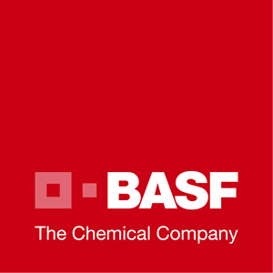
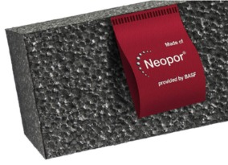
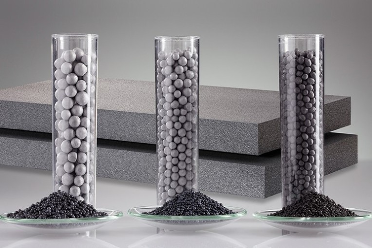
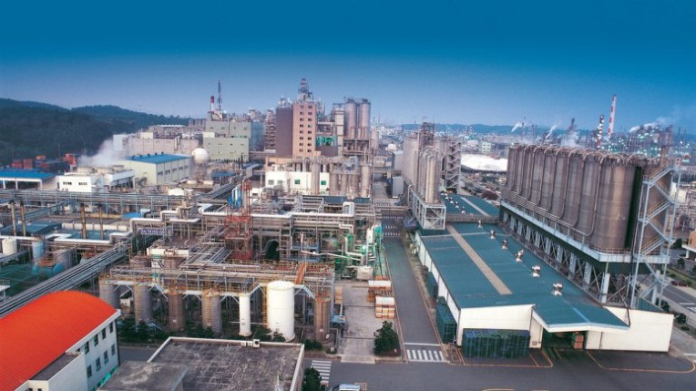

|  | 1951년 발포성 폴리스티렌(EPS)인 스티로폴(Styropor)를 세계 최초로 개발한 회사가 어디일까요? 바로 독일에 본사를 둔 세계 최대 종합화학회사 바스프(BASF)사 입니다. 바스프(BASF)는 1865년 프리드리히 엥겔호른이 만하임에 세운 주식회사 바디셰아닐린 & 소다파브릭(Badische Anilin & Soda-Fabrik)에서 출발했고 현재 전 세계 약 200개국에 수천 종의 다양한 제품을 선보이며 화학업계를 선도하고 있습니다. |
바스프(BASF)는 1998년 스티로폴을 대체할 차세대 고성능 단열재인 네오폴(Neopor®)을 개발합니다.
네오폴은 일반 범용 단열재인 스티로폴을 발전시킨 획기적인 단열재로, 특수 그라파이트(흑연) 입자를 포함하고 있어 백색 스티로폴과 대비해 은회색 빛을 띠는 것이 특징입니다. 기존 단열재 대비 최소 20%의 단열두께를 줄일 수 있고 단열 성능 동 20% 더 향상된 제품이죠. 친환경적인 polymetic 난연제를 적용하면서 친환경성과 단열성을 더욱 높였습니다. |
 |

특히 네오폴은 독일 외 국가에서는 한국 울산공장에서만 생산하고 있습니다.
DK보드는 BASF 네오폴 정품을 사용하고 있습니다.
네오폴(비드법2종)에 특수 난연코팅을 하고 성형된 EPS에 난연도포를 더한 준불연 가등급 단열재 DK보드를 개발, 준불연 EPS 시장을 이끌어가고 있는 혁명적 제품입니다.
준불연 가등급 EPS 단열재 DK보드
건축용 / 드라이비트용 / 판넬용
문의 1855-2240